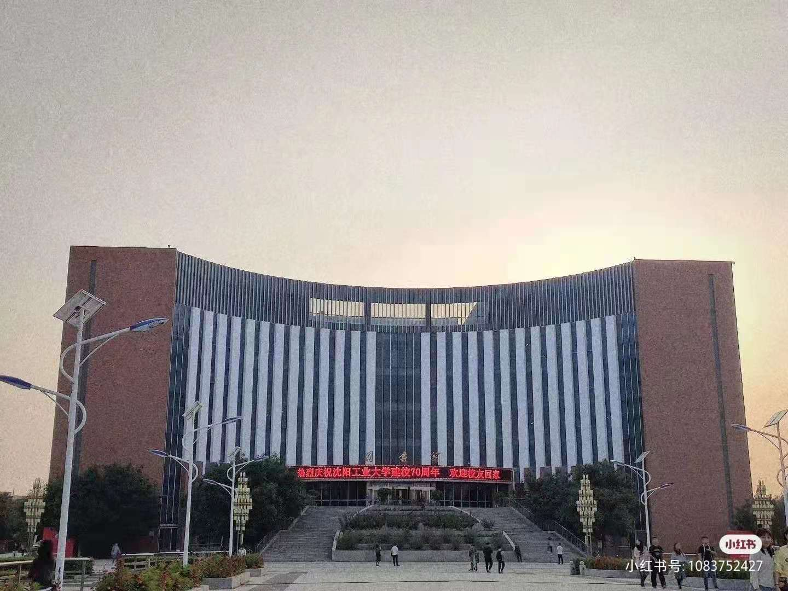

♦ 我的理想
高中的时候总在幻想着各种上大学的情形，各种自由自在，无忧无虑，却没想到真正到了大学的时候经历确是完全不同的，现在终于体会到，没有人知道大学你会走一条怎样的路，除非你亲自经历，我们正在摸索着一条未知的，充满无限可能的大学之路。走过了茫然的大一，开始发现很多本应该完成的事情都浪费在一些毫无意义的事情上，生活没有规律也没有规划。幸好现在还不算晚，从现在开始，给自己一个清晰的未来，到了大三，一部分人决定考研，一部分人决定考公务员，只剩下一少部分人什么目标都没有。
我心仪的考研院校就是——沈阳工业大学
沈阳工业大学[沈阳工业大学硕士招生简章（点此处获取）]（Shenyang University of Technology）是一所以工为主，涵盖工、理、经、管、文、法、哲、艺术等八大学科门类的多科性研究应用型大学，入选国家“卓越工程师教育培养计划”、国家建设高水平大学公派研究生项目、国家”特色重点学科项目“建设高校、中国政府奖学金来华留学生接收院校、“全国首批深化创新创业教育改革示范高校”、教育部首批“新工科研究与实践项目”。学校始建于1949年，1985年由沈阳机电学院更名为沈阳工业大学，原为国家机械工业部所属院校，1998年起由中央与地方共建，以辽宁省管理为主。学校具有学士、硕士、博士三级学位授予权。建有4个博士后科研流动站。现有5个博士学位授权一级学科，20个硕士学位授权一级学科，5个专业学位类别。学校现有师资队伍1313人，其中院士2人，教授186人、博士生导师165人。现有普通本科生18415人，硕士研究生3070人，博士研究生342人。学校由位于沈阳市的中央校区、兴顺校区、国家大学科技园和辽阳市的辽阳分校组成，总占地面积158.99万平方米，校舍建筑面积74.27万平方米；设有20个学院、2个教学部和2个工程实训中心，有55个本科专业、19个专科专业。